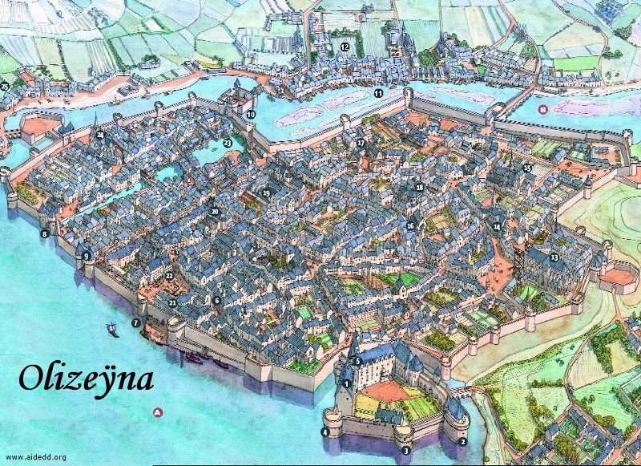

Olizeÿna
Olizeÿna est, en taille, la deuxième plus grande ville du matriarcat d'Olizya (7620 habitants), après Hilminia, la capitale. C'est une ville riche. Comme la société du matriarcat d'Olizya n'est pas organisée en guildes, mais en clans, ce sont donc des clans que l'on retrouve dans toutes les grandes villes de la province, et Olizeÿna ne fait pas exception à cette règle. Le cours d'eau qui se jette dans le lac des Hautes Eaux en bordure de la cité se nomme l'Aveÿna.
Carte

{kind=link}
Olizeÿna (970 x 704)
Les zones
- A. Lac des Hautes Eaux.
- B. Rivière Aveÿna.
Lieux particuliers
- Palais des Clans. C'est dans ce château que, à Olizeÿna, sont représentés les 18 clans qui gouvernent le matriarcat, comme dans toutes les grandes villes de la province. C'est là par exemple que sont délivrés les fameux certificats de capacité, indispensables à tout membre du sexe masculin s'il veut exercer une activité lucrative.
- Tour du clan des Armurières. Historiquement un des 3 clans les plus influents, c'est aussi le plus extrémiste envers les hommes. Il possède ici une aile qui lui est réservée.
- Tour du clan des Tisseuses. Deuxième clan le plus influent, qui possède lui aussi un espace réservé.
- Tour du clan des Bijoutières. Le dernier des 3 clans les plus influents, et assurément, avec celui des tisseuses, le plus riche.
- Bâtiment principal. Là sont installés tous les autres clans, les musiciennes, les menuisières, les femmes d'armes, etc...
- Auberge du Pinceau Doré. Une auberge classique.
- Port militaire. Accès réservé aux soldats afin de pouvoir rejoindre rapidement la caserne (21).
- Porte du canal. Accès principal utilisé par les bateaux marchands venant faire des affaires à Olizeÿna.
- Porte des marchands. Ici était installé il y a encore quelques décennies le port commercial de la cité. Mais devant la croissance soutenue de la ville, l'accès bien vite ne suffit plus. Olizeÿna a alors construit proche de là un canal (23) afin de donner plus de place marchands aux pour leurs échanges.
- Pont fortifié. Bâti sur l'Aveÿna, cette porte est sans conteste, de part sa proximité du quartier marchand de la ville, la porte la plus usitée d'Olizeÿna.
- Port de pèche. Ici sont amarrés tous les petits bateaux de pèche de la ville. Toutes les familles habitant les maisons alentours vivent principalement de cette activité.
- Auberge du Filet Garni. Une auberge bas de gamme, à la chaude ambiance, fréquentée principalement par des marins.
- Temple de Sunie. Sunie, déesse de l'amour et de la beauté, la plus vénérée en Olizya, possède le plus grand et le plus beau bâtiment de la ville, comme c'est souvent le cas, débordant de richesses. De nombreux adorateurs de Séluné s'y retrouvent également.
- Chapitre de Saris. Ce bâtiment modeste accueille un chapitre de l'ordre de paladins de Saris. C'est actuellement le seul des cinq chapitres de l'ordre dont le commandeur est une femme.
- Temple de Waukyne. Ce temple est le plus fréquenté d'Olizeÿna, Waukyne apportant la prospérité et la richesse.
- Chapelle d'Oghma. La principale école de la ville, patronnée par Oghma, bien que chaque clan possède sa propre structure de formation.
- Clan des hommes. Non autorisée à loger au palais des Clans (1), cette nouvelle organisation est toutefois officielle et a pour but de défendre le droit des hommes dans la province. Force est de constater toutefois que peu de monde lui fait cas jusqu'à présent.
- Temple de Tempus. Olizya a beau être pacifiste, la province possède les armes pour se défendre. Le dieu de la guerre Tempus n'est donc pas oublié.
- Orfèvrerie des Sœurs. Bâtiment du clan des bijoutières où l'on peut trouver, superbement travaillées, parmi les plus belles gemmes et pierres précieuses du royaume.
- Armurerie d'Olizya. Ce type de bâtiment, présent dans de nombreuses villes de cette province, met en vente force armes et armures de la meilleure qualité, bien qu'aucune ne soit de nature magique.
- Caserne. Une caserne de l'armée d'Olizya est installée dans cette ville.
- Marché de textile. Un des plus grands, sinon le plus grand, de tout le royaume. Tenant place quatre fois par semaine, on y trouve toutes les matières et toutes les couleurs, sous formes de tissus ou de vêtements, aux meilleurs prix, et d'une excellente qualité.
- Canal d'Olizya. Construit il y a moins de 50 ans, ce canal désert le quartier marchand de la cité, et permet ainsi à de nombreux bateaux de charger ou décharger rapidement et aisément la plupart des cargaisons.
- Temple de Corellon. Corellon, dieu des elfes, Olizeÿna abritant une grande communauté de cette race.
- Maison des ménestrels. Un petit mystère entoure cette maison. Beaucoup disent que ce n'est rien de moins qu'une annexe de la guilde des courtisanes de Laelith.
Écrit par blueace. Basé sur une carte de Nantes de Jean-Claude Golvin, du CNRS